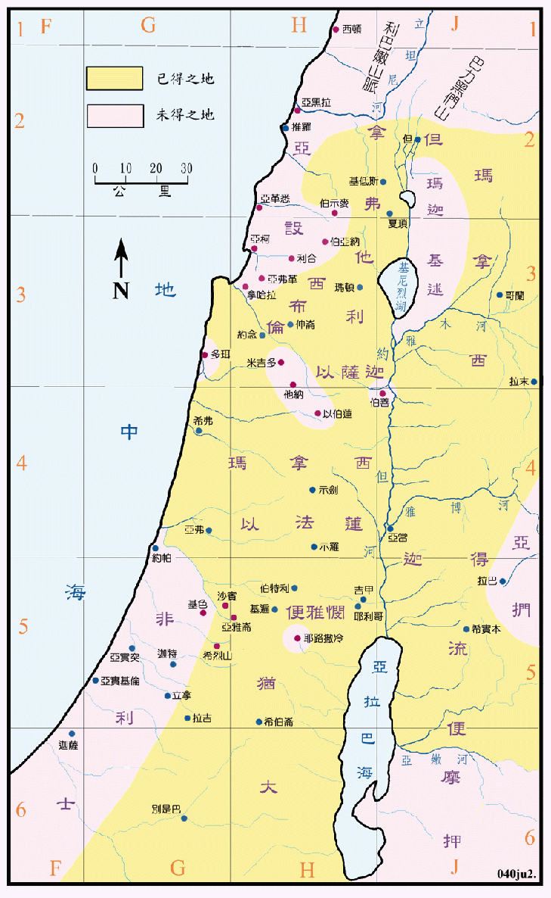

| 圣经 | 说明 |
|---|---|
| 士1:2-36 | 以色列人未得之地。 |
| 士3:3 | 留下的几族人。 |
圣经中并没有记载征服北部的情形，但是却代替的说明了未能取得之地。其中亚设支派失地最多，只留下山脚下的一些城镇。玛拿西则未能取得多珥、米吉多、他纳、以伯莲和伯善等五个战略的重镇，南北的交通常有被切断之虑。在南部仍有耶布斯城和非利士地未能取得，而后者就成了往后数百年间以色列人的大患，影响深远。但支派之地不仅西部沿海的土地被亚摩利人所占，而且东部的沙宾、亚雅仑和希烈山 (伯示麦) 也被亚摩利人盘据，结果但人只馀下琐拉和以实陶两个城所属极为窄小的地区，因此就不得不另谋安居之地。后来亚雅仑等城被以法莲人所收复。推罗和加利利地以北之地，就是利巴嫩，以色列人只有在所罗门王的时代短期的占有。